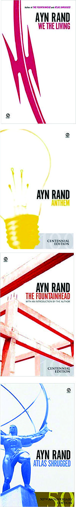
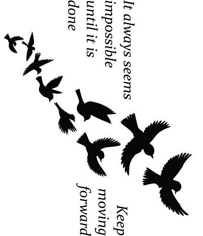

In this rotation, we learned the basics of laser cutting and engraving different objects. I made a bookmark, a water bottle, and a clock.
The first thing that I made was a bookmark. I first had to measure the leather bookmark and create an image to laser engrave. The laser engraver can only recognize black and white, so even though my original image had colors, they did not appear on the final product. The process for making the bookmark was very quick, and it printed in a short period of time because of its small size.
 Image 1: The original file for the bookmark (optimized for size).The secpmd thing that I made was a water bottle. I first had to measure it in order to create my design. When I made my design in CorelDRAW, I had to rotate everything 90 degrees so that it would engrave the way I wanted to. The laser engraving literally burns the paint away, which is how the design can appear. Overall I am very happy with the way the bottle turned out and I will be using it to store my drinks in the future.
 Image 3: The original file for the water bottle (optimized for size).The third and final thing that I made was a clock. First I had to find the dimensions of the vinyl record that we were turning into clocks. I then had to make my design in CorelDRAW, remembering to make everything a hairline so that it would be cut out instead of engraved. I laser cut two cardboard prototypes before making my final clock so that it would have no mistakes. In the end, it turned out very nice and precise, and is now hanging in the WIC.
Image 6: The original file for the clock (optimized for size).